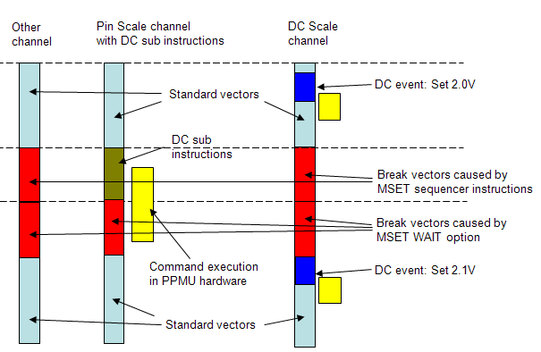

DC measurements using a PPMU and a DC Scale DPS
Special care must be taken when
- forcing a voltage on a DC Scale DPS, for example a DPS128 power supply card (vForce event), and
- measuring the voltage with a PPMU, for example the PPMU on a PS1600 digital channel card (DC
sub-pattern).Note If you do use this setup, you must be aware that the Set Value events on the DPS card and the Measure events on the channel card are not synchronized. They start in sync but the PPMU measure events on the channel card are delayed, because they require a longer processing time.
As the DC events are implemented differently on different cards, you will have to find appropriate delays depending on your setup and your application needs.
Recommendations:
- Give DC events about 1 ms settling time before any measurement.
- Leave values stable for at least 1 ms after the measurement.
- Add additional vectors specifically when placing a measurement close to the end of the pattern.
- Use the RPTV sequencer instruction for generating dynamic DC measurement waits between the
measurements. Note The WAIT sequencer instruction cannot be used for generating post-measurement delays on DC Scale cards.
- Use different ports for the forcing DPS channel and the measuring PPMU channel.
Example
The graphic below illustrates the recommended setup. The MSET WAIT parameter extends the number of break vectors generated after executing the DC sub sequencer instructions.
The amount of required waiting time must be optimized manually. It depends on the application (settling time, capacitors) and on the type of DC operation.

Functional changes
- Introduced in SmarTest 7.1.0